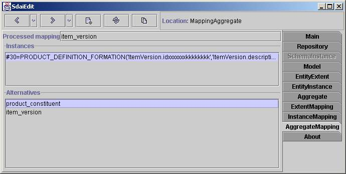

Aggregate Mapping page

Aggregate mapping page shows aggregates in ARM concept. First field processed
mapping shows which type of this aggregate member is intended. In the 'Instances'
list all elements of aggregate is listed. And in the 'Alternatives' list
mapping alternatives for every element from aggregate are shown. When you
choose one element alternative mappings for this instance will appear.